Installation Views
展览现场
On-Site · Visual Documentation
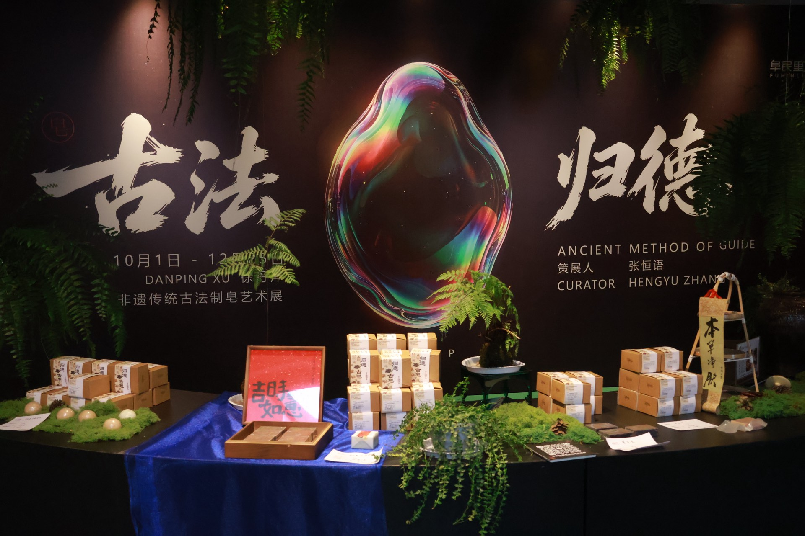
古法归德 · 阜民里
FUMINLI · SHANGQIU
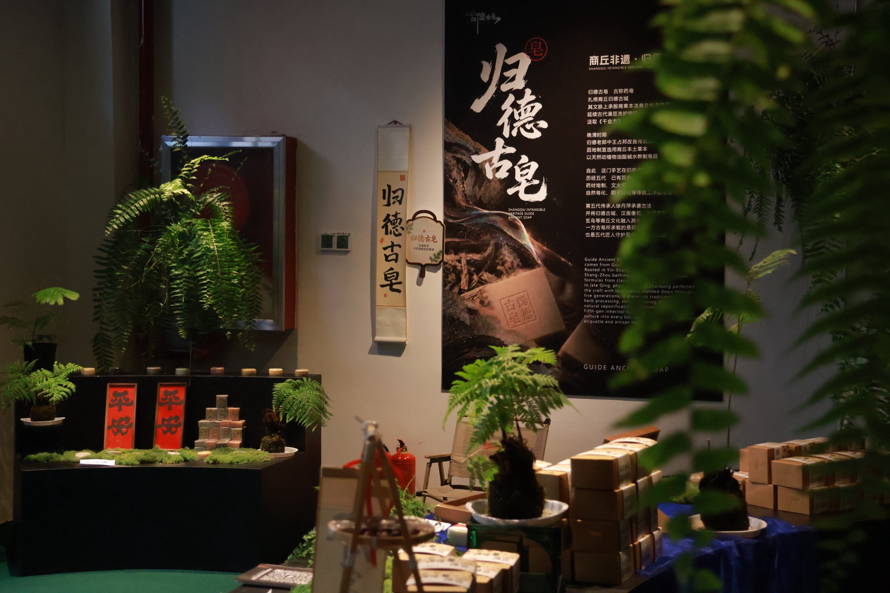
展陈侧视
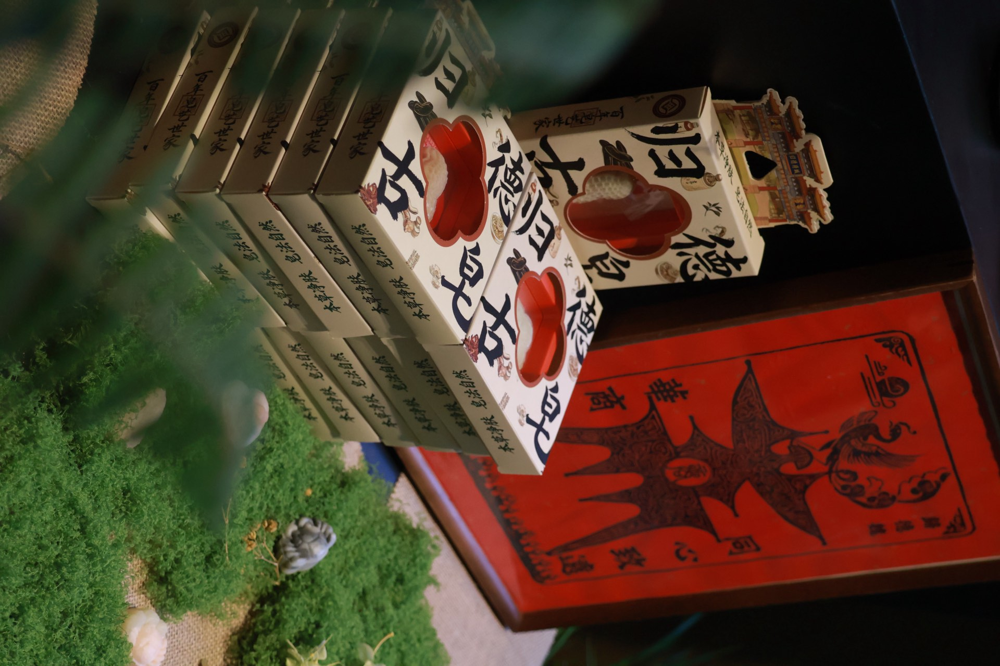
产品陈列
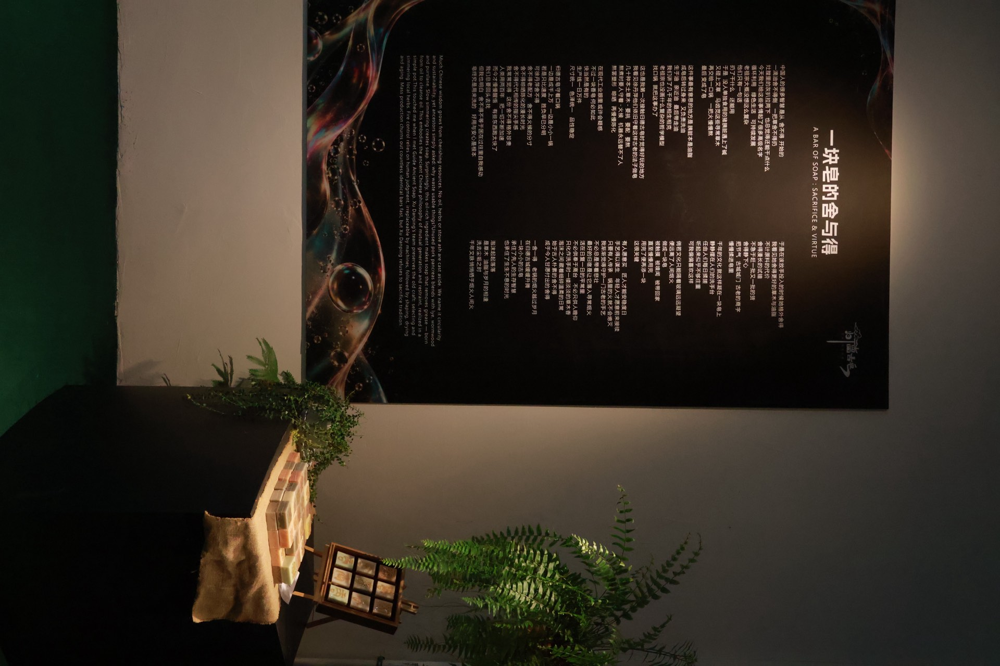
品牌海报
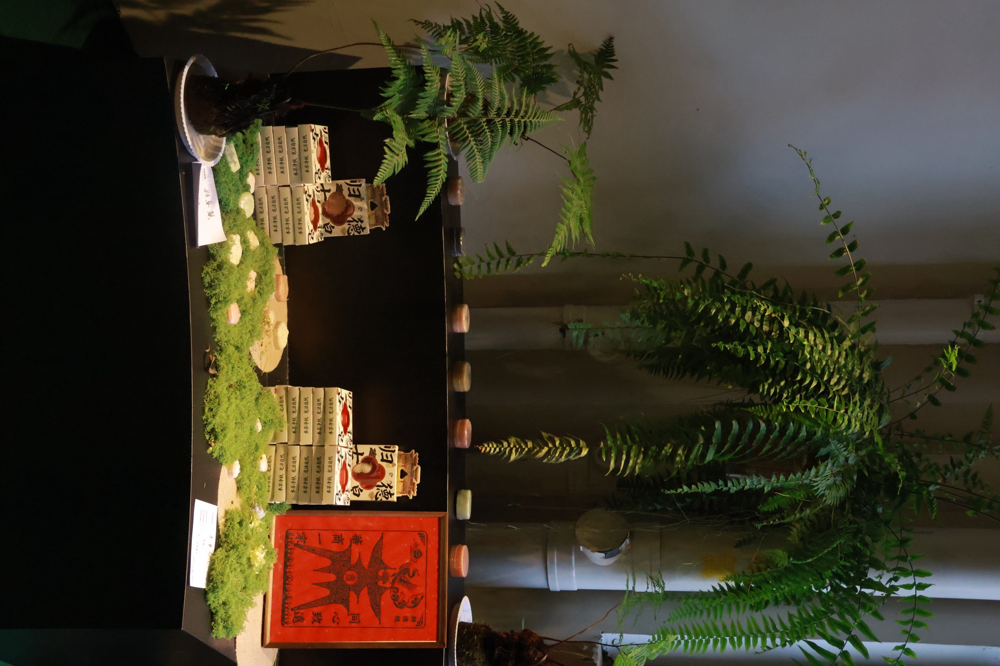
产品展示

空间一角
归德古皂，古称药皂，扎根商丘归德古城。上承殷商草本洁身文化与商周沃盟之礼，延续古代澡豆洗护传统，汲取《千金方》与北宋《太平圣惠方》古方智慧。
晚清时期，归德老郎中王占邦改良传统古方，因地制宜选用商丘本土草本，以天然动植物油脂碱水熬制皂品。自此代代相传，历经五代，已有百余年。
Guide Ancient Soap, formerly medicinal soap, originates from Guide Ancient City in Shangqiu. Rooted in Yin-Shang herbal cleansing culture, it inherits formulas from classic medical texts including Qianjin Yaofang and Taiping Shenghui Fang.
Late Qing physician Wang Zhanbang perfected the craft with local herbs. Handed down through five generations.
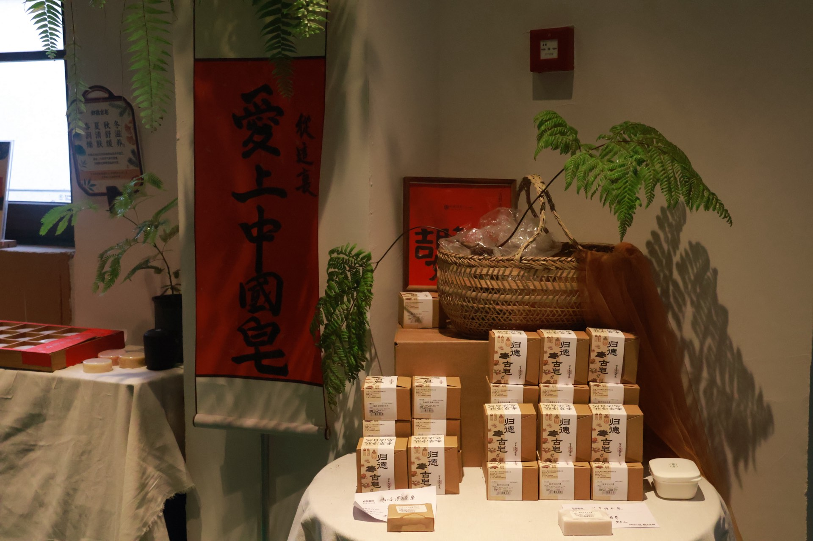
技艺源自家族代代相传的本草制皂古方，自年少跟随长辈学习识草、采药、熬皂，熟稔全套古法工序，深谙本草配伍之道。
多年来坚守古法核心：药材炮制、文火慢熬、揉搓擀压、自然皂化、阴干陈化。同时结合当代护肤需求，开发多系列本草皂品与非遗文创，并常态化开设公益传承课堂。
Xu Danping masters the complete traditional process — herb processing, slow simmering, kneading, natural saponification and shade aging. She preserves the ancient craft while innovating for modern skincare, and regularly conducts public heritage classes.
中国人的很多智慧，是从"舍不得"开始的。一滴油舍不得倒，一把草舍不得扔，灶膛里的灰扒拉两下，也总觉得还能干点什么。老祖宗没画什么复杂的哲学模型，找口锅，就把相生相克这事办了。
生于油，亲近油，最后带走油。
这件事最有意思的地方是——胰脏本是油脂，成皂后转过身来，又负责洗油。归德古皂守着一口老锅，一边是成千上万，一边是小小一锅。
徐丹萍舍不得老配方，舍不得火候的分寸，舍不得晾晒陈化的漫长时光，舍不得代代相传的指尖手感。但舍不得不等于困在过往里自我感动。皂终究是用来洗的，好用与安心是根本。于是在该放手投入的时候，她格外舍得。
千年的文化，就这样凝在一块皂上。不必供奉于高台，不必只供人瞻仰，只化作洗手时一缕淡淡的草木香。
Much Chinese wisdom grows from cherishing resources. No oil, herbs or stove ash are cast aside. We name it circularity and sustainability, yet ancestors simply asked: why waste usable things?
Born from oil, intimate with oil, and finally removing oil.
This oil-rich ingredient — pork pancreas — becomes a soap that cleans grease, embodying the ancient Chinese philosophy of mutual generation and restraint, realized in a simple pot.
Xu Danping preserves the old craft: selecting and simmering local herbs. Fire control relies on human judgment, irreplaceable by machines, followed by shaping, drying and aging.
A millennium of culture, condensed into a single bar. Not displayed behind glass, but held in hand — a faint herbal fragrance with every wash.





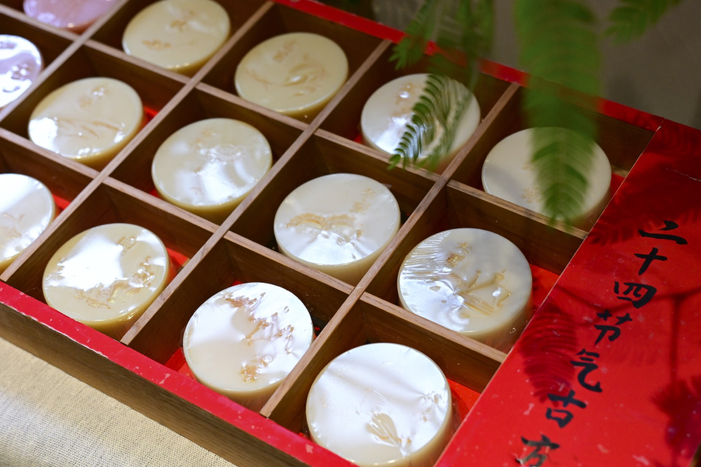
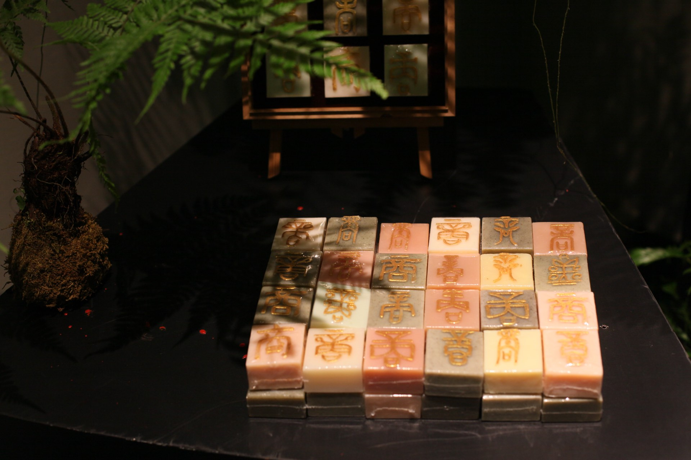
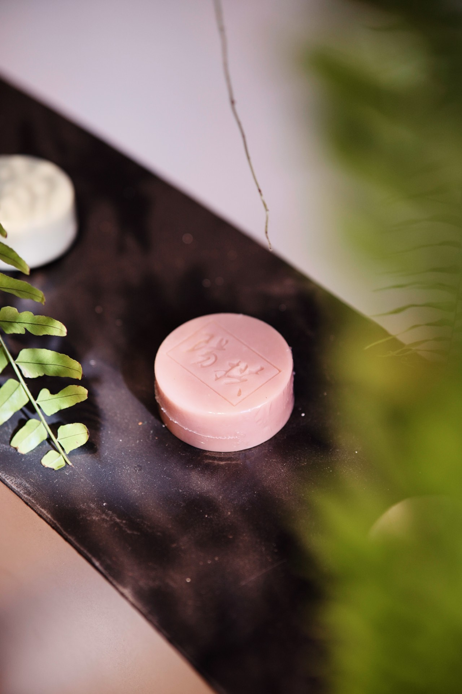

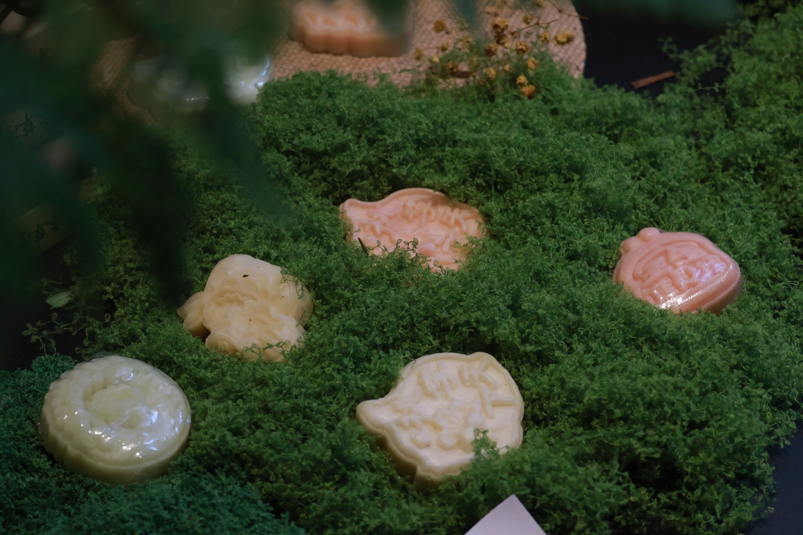
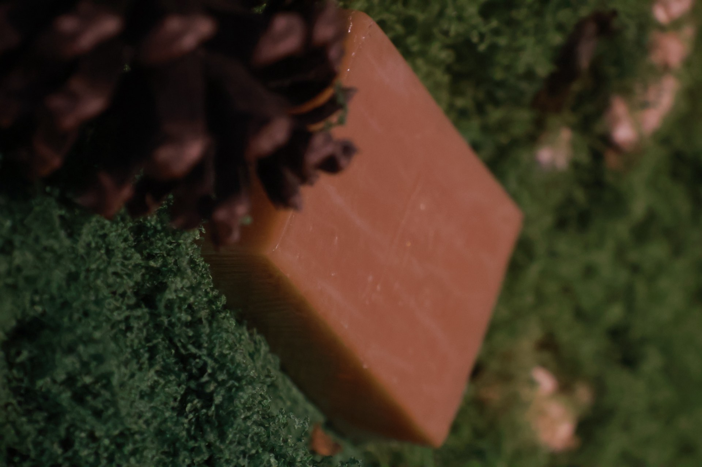
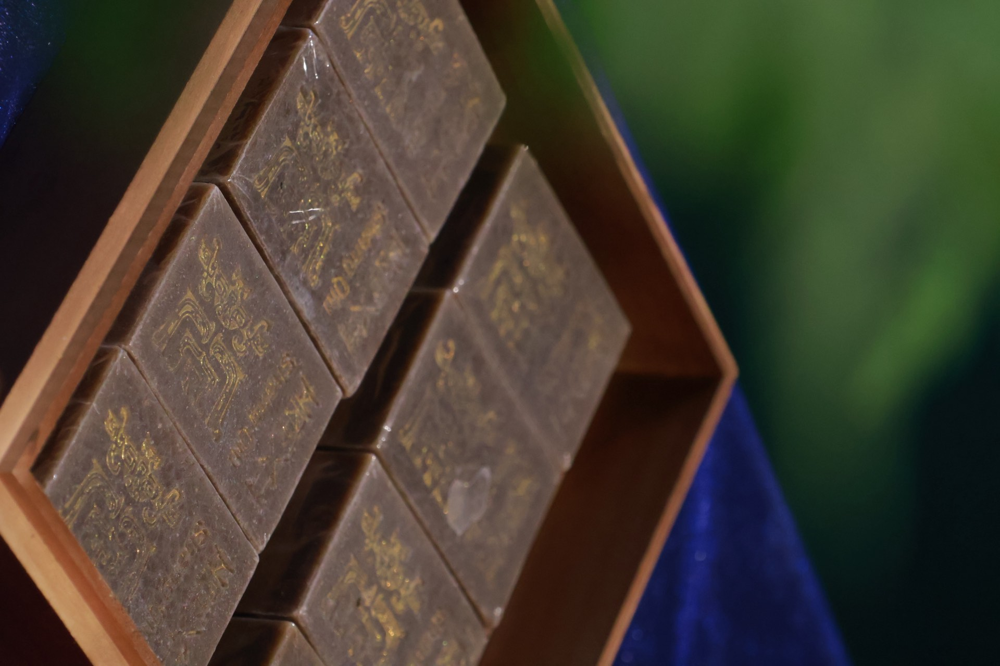
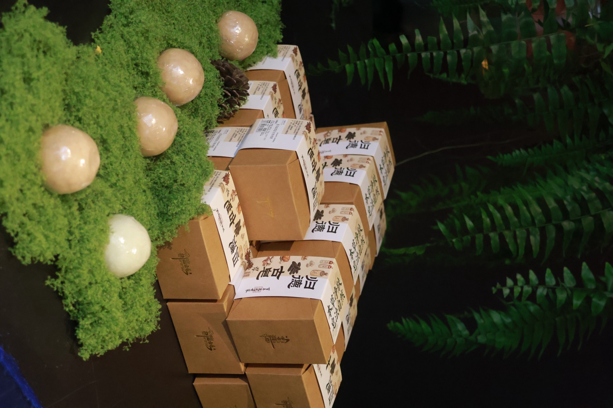

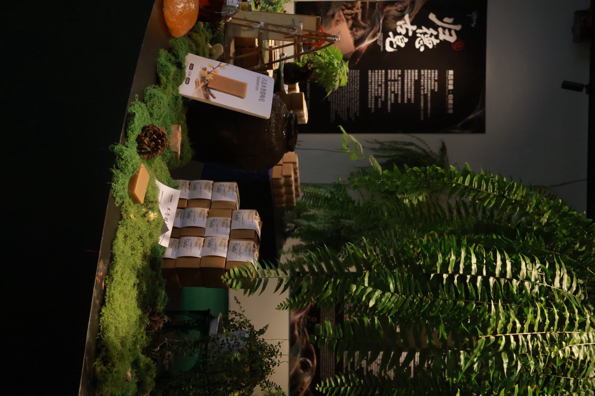